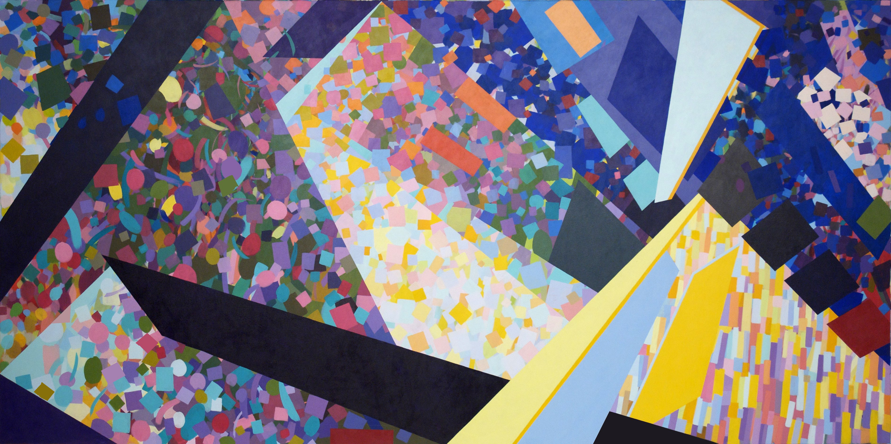
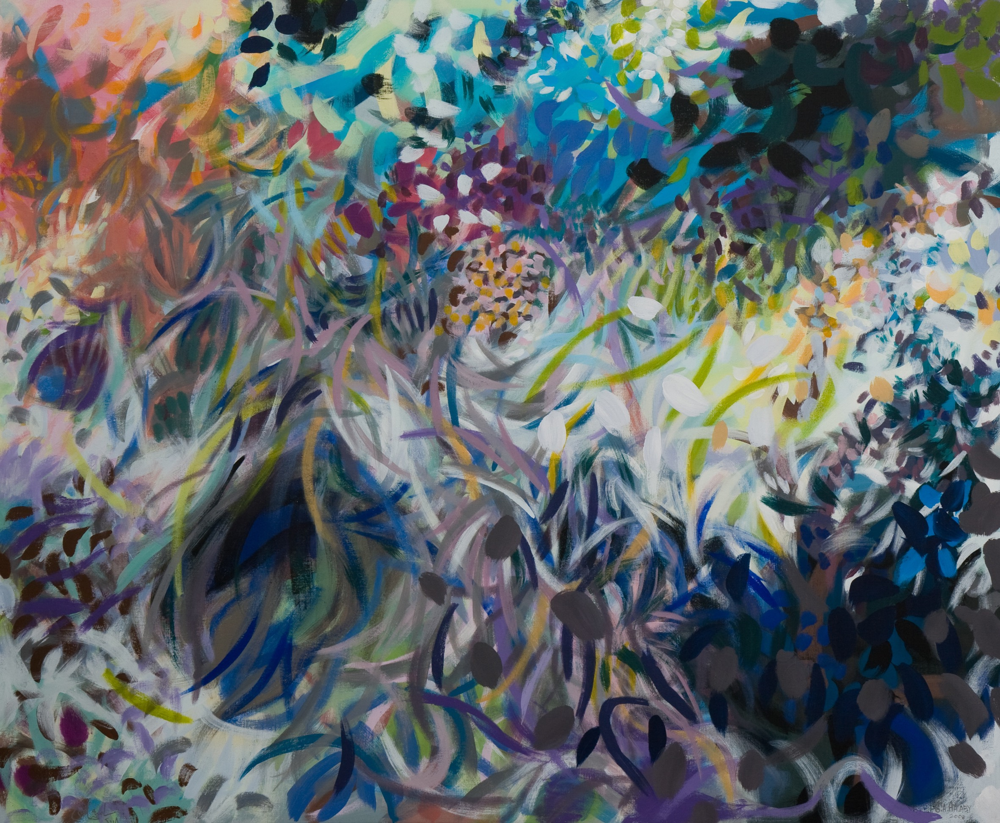
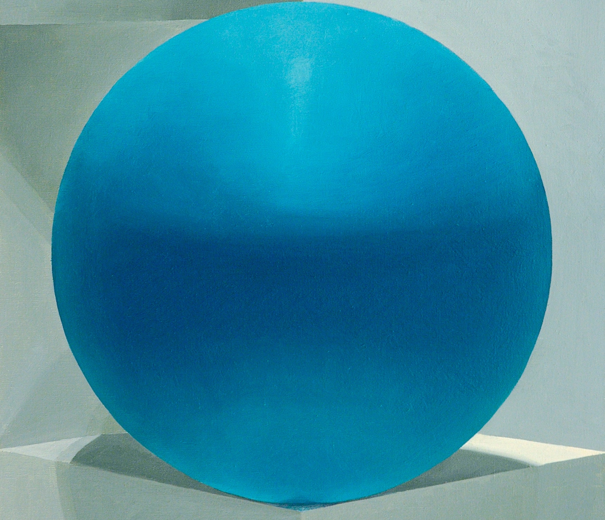

The vividly hued abstract paintings of Samia Halaby are deeply layered compositions where the medium’s static nature is undone by her penchant for creating movement, capturing moments and manipulating technical art-making tenets with scientific precision. The prolific Palestinian painter (who has also worked with drawing, printmaking and computer-based kinetic art) might give those less moved by abstraction a wake up call – her way of seeing enlivens her large-scale canvases, making it near impossible to merely passively absorb them.
The paintings stem from an organic methodology, an individualised language that Halaby has spent the better part of four decades honing, illuminated by her recent publication, Growing Shapes: Aesthetic Insights of an Abstract Painter. “What remains in my minds’ eye is a jingle-jangle of pungent colour,” she writes. “I have no desire for hero-centered narrative. I want to be scientific and extract the essence.” And so, she extracts intuitive adventures, visual recordings, retrospective discoveries, boundaries, intersections, textures, densities, movements and relative distances of forms – a sensory experience for a handful of dialoguing colours and forms to throw at the viewer. However, they are more than spots or geometric forms darting or floating around the canvas, “The attributes of a shape reveal its history,” her text states. “What acted on it actually reshaped it.”
Halaby’s desire is to paint observed processes, not mimetic recreations of nature – save for her political works, in which she adopts a more illusion-based technique in order to “be a camera”, exemplified by her Drawing the Kafr Qasem Massacre series, a decades long research project involving archives, interviews and documentary materials. “I have taken a stand to what is the most important kind of painting in our time,” she says of abstraction, one of the final frontiers yet to be exhausted. “In the past 150 years, it’s been the most advanced form of picture making. Everything else explores more verbs and words, and illusion is something we have already studied for over 500 years, more than we needed to,” she continues. “It has been subsumed into useful technologies like illustration or photography”. Abstraction is broached theoretically, historically and practically, granting viewers access to the works from a variety of standpoints. So, while the works are exactly what they seem – painterly abstractions built upon materialist and modernist principles – they can also be much more.

Halaby explores how reality can be represented through form. Critics have long attempted to separate abstraction from reality, but reality is not necessarily a photographic image. “If you take 10 seconds turning your head from left to right, all the shapes and forms that you see cannot be captured in a photograph or a realistic image,” she says, before elaborating with the example of walking down a street in New York where the simple act of staying alive is dependent on keeping your senses active. And capturing those observed life rhythms is achieved through the simplest elements of pen or brush to paper or canvas: colour, edge, shape, and texture.
It may be a (oft overlooked) given, but Halaby’s process deeply engages the basics of making art, and the viewer feels it. Perhaps part of this stems from teaching art and art history at Yale in the 60s and 70s. “There were times when teaching was exciting because you’re dealing with different minds and thoughts, but at times it was very painful to be standing around with students helping them make art instead of doing it myself,” she recalls. But the immersion in an environment rife with individuals at various stages of their artistic careers “was illuminating.” Halaby had to continue studying to better teach, and the more she read, the more enlightening it became, leading her understand the importance of looking at historical images instead of “distorted texts.” Broad spectrum research, or general knowledge gathering, has always been critical for her, and settling down with her self-authored book offers insight into what she was reading about (aneurysms, at one point), observations and lists and preliminary drawings that outline the role of every painted element. This open-door to the less glamorous side of making adds a dose of humanity to the veil an artist often is enveloped in, but it also indicates the complexity of her creative process:
Dark gray: circle
Pale green: force, pressure and fault lines
Red: shape redrawn in reaction
Purple: reactive new object
Yellow: interference boundaries of new object
|  |  |
Halaby’s decision over a decade ago to divide perceived environments into four categories –large space, intermediate areas, smaller things and very small things – allowed her to deconstruct what she saw and reduce them to their core values. Large space and intermediate areas serve as the background (mountains, cities) while the remaining two categories represent free moving entities, such as cars or people, and then birds or household objects. Perspective and entire chains of narrative are represented by pattern, proportion and hue – that has proven enough to ascertain the essence of any given scenario. Hoping viewers think, “Wow, that is just like what I saw in the street/sunset/crowd,” she says, “once that happens, it means I have succeeded.” Her body of work is as much an exploration of push-pull reactions as it is a harmonious, evocative aesthetic, but it is not of the mind nor an artistic invention. “I don’t believe any of that,” she says. “It isn’t about me, it’s about what I see around me. It speaks to a mind full of images.” And the mind is full to the brim with the flurry of daily stimuli.
Making art is not a narcissistic opportunity, rather, a social responsibility for Halaby, which stems as much from her personal history as a female Palestinian artist who fought against the numerous social and cultural categorisations, as it does from her artistic history, where she encountered Cubism and Russian Constructivism and their leftist underpinnings. “This propaganda about art being self expression… What is so different about you or me? We are both human.” It is better to focus on the various things happening around us – speeding cars, falling leaves, strokes, conflict. “Learning to see with your invaluable eyes is a socially educated process,” she writes in Growing Shapes. Halaby loves to hear about what other people see as well, “But most people don’t like to talk about that; I used to have a studio in downtown New Haven and there was a janitor in the building who also worked late. He would practically dance in front of a painting telling me what he saw and what was happening,” she recounts, mimicking his gesticulations. “And when he didn’t like the painting he would say, ‘Well, my wife would like that’ she laughs. “He didn’t want to say he hated it. I thought that was really so wonderful.”